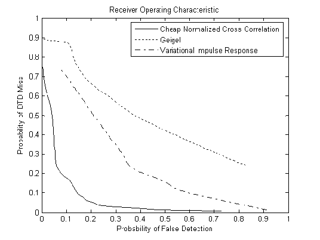
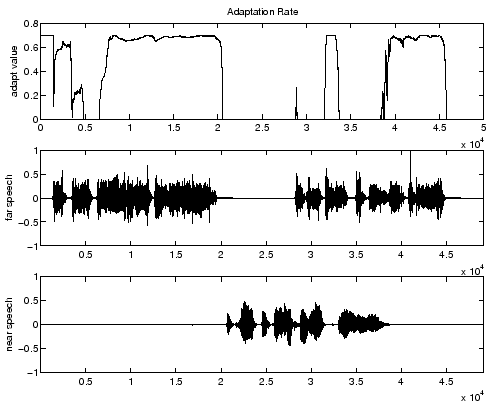

Next: Delay-and-Sum Beamforming Up: A Delay-and-Sum
Beamformer with Previous: Types of Adaptive Algorithms
Contents
There is an additional complication involved with echo cancellation
I was neglecting in the adaptive filter section. We don't want to
adapt the filter when there is near end speech. Any interference in
the input will cause the filter to diverge. And algorithms that
converge quickly tend to diverge quickly as well. So there needs to
be a way of detecting near end speech. This is easy when there is
no far end speech. But when both speakers are talking it's more
difficult. Most detection schemes calculate a value based off the
reference and input signal, and then compare it to a carefully
selected threshold. Then a decision is made to either turn
adaptation on or off. Even while adaptation is off, the echo
canceller will still function so long as the room model does not
change. A comparison of some DTD methods are below. A good
detection scheme will have low probability of miss and a low
probability of false detection. The plot is called a Receiver
Operating characteristic Curve (ROC) [BGMSG].

The detection method I'm using is the Cheap Normalized Cross
Correlation Method[Ah][BMC]. It requires very little computation and
works well compared to other methods. Unfortunately, the cheap
version uses the estimate of the room response to calculate the
detection statistic. This makes it difficult to choose a threshold
because the detection statistic depends on the room response and
the room response depends on the detection statistic. The results
are slightly better (and the range of valid threshold values is
wider) if we make the rate of adaptation proportional to the
detection statistic. Below is a simulation of this method combined
with the FAP.

Next: Delay-and-Sum Beamforming Up: A Delay-and-Sum
Beamformer with Previous: Types of Adaptive Algorithms
Contents
Todd A Goldfinger 2004-11-22